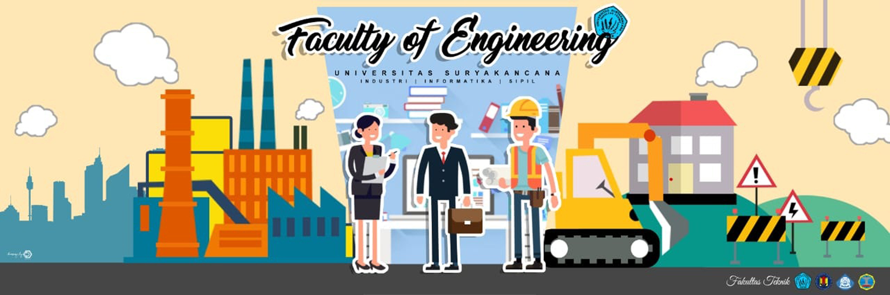

Berita Terbaru | Lihat Semua

Lowongan Kerja
11/02/2019 Admin
Lowongan kerja bagi Mahasiswa Tingkat Akhir / S1

Kegiatan Sosialisasi Kerja Praktek
T.A 2018-2019
09/02/2019 Admin
Kegiatan Sosialisasi Kerja Praktek Mahasiswa
angkatan 2016 atau yang mengambil Mata Kuliah Kerja Praktek…

Seminar Tugas Akhir Periode
Januari 2019 T.A 2018-2019
09/02/2019 Admin
Kegiatan seminar tugas akhir yang periode bulan
Januari dilaksanakan pada Rabu dan Kamis/ 30 Januari…

Laboratorium Komputer Program
Studi Teknik Informatika
28/01/2019 Admin
Laboratorium Komputer Teknik Informatika merupakan
fasilitas penunjang kegiatan perkuliahan di lingkungan…
Galeri | Lihat Semua


Blogroll
Akademik
Kontak Kami
Fakultas Teknik Universitas Suryakancana
Jl Pasir Gede Raya Cianjur
Phone : (0263) 283578
Faxmile : (0263) 283578
E-Mail : info@ftunsur.ac.id